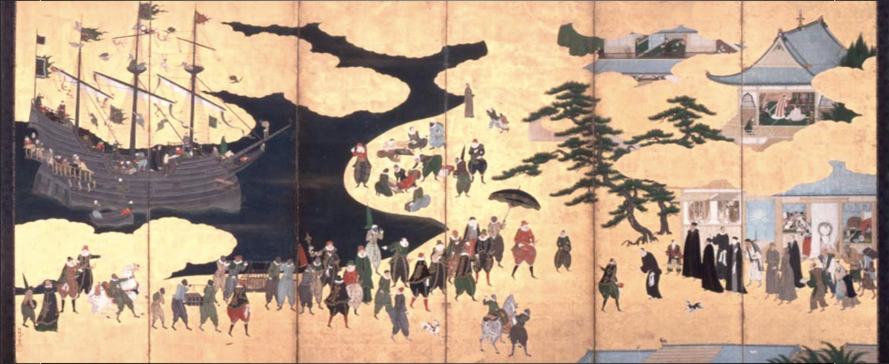

Artwork
In Japanese landscape paintings – there is no emphasis placed on the point of view of the perspective of the work. In Western style paintings – there is a clear angle at which we view the image.
These Japanese paintings are created with a certain wholeness to them – a certain unified identity of every aspect of the picture being in the same size, the same space as eachother – a kind of nothingness.

Below is an analysis of the difference between Western style paintings and the one we see above:
"As suggested by Panofsky,[5] the pictorial representation of such a space was developed especially through landscape painting. Yet we don’t call the painting by Sesshū fūkei-ga (landscape) but rather sansui-ga (shanshui-hua in Chinese). Sansui means literally "mountains and waters," i.e. nature. The name of fūkei-ga was invented at the middle of the nineteenth century in order to translate the Western term ‘landscape painting.’ It was this feeling of difference, mentioned earlier, produced by the Western style that required a new name: ukie. Before then, paintings representing landscape had been called sansui-ga. But those in the new Western style appeared to be so different from them that people needed a different name.
In English, the word ‘landscape’ means both the features of the land itself and the painting of such scenery. This ambiguity reflects the Western sense of landscape that focuses on its visual aspect. As the result, the suffix ‘-scape’ is almost confused with ‘scope’ in words such as ‘landscape,’ ‘cityscape,’ and ‘seascape.’ More important here is the word ‘land.’ Sansui is a kind of ‘land,’ but land is not limited to mountains and waters."
- Ken-ichi Sasaki
The Power of Things
One thing animism has in common with the stalker film is the reverence of the importance of physical objects
Trees with rope tied around them are temporary objects to access the much larger universe
In this way animism accesses the sublime in two manners
The sublimity of gardens, the access to the views
Additionally, the sacred physical objects within can free up that power
The intentional way everything in the garden is maintained create a feeling of wonder within
Sasaki again describes with beauty this conception in relation to nothingness:
"Sansui, or "mountains and waters," is very different from landscape. In the first place, as suggested above, we cannot apply this word to townscapes. In addition, a desert cannot be called sansui since this requires a humid climate. More essentially, what is decisive is the cultural connotation peculiar to this word. The Great Dictionary of Japanese, after giving the literal meaning in the entry on this word, adds the following second meaning: this word, "derived from the geographical features of mountains and waters, can mean the natural world in general, in contrast with the common human world."[6]
The contrast tothe secular world relates sansui to retirement. We remember the Christian hermits who retired to a desert. Sansui and desert are completely different. Desert is nothingness and erases the secular world, so much so that hermits are haunted by phantoms. We see this, for example, in the famous painting of St. Antonius’ Temptation by Hieronymus Bosch (illus. 12).
Being placed in an annihilated environment, a hermit who has lost his world cannot but live only with himself, so that the desires, fears, worries, etc. about himself seem to appear in exaggerated and distorted forms. We cannot conceive such a thing in a retired life in sansui because sansui is not nothingness of the world but rather constitutes a different world. The development of sansui painting in China is considered linked to the philosophy of shinsen (shen xianin Chinese), which aims at attaining the transcendental state of immortality. Sansui was the place of training for identification with tao, the principle of being, in view of the highest state. Indeed, in sansui painting, we find human figures: a fisherman on a lonely boat, a man following a mountain path, a man meditating in a cottage, etc. Here the relationship between man and the world is the reverse of the case of a Raphael or a Breughel. Sansui is not the background of human actions and historical events but the unique or holy place that enables man to transcend: nature comes first and man follows. In the fifth century Chinese theory of painting called liufa (six principles), it was the vibration with vital power of ki (qiyun shendong in Chinese) that was considered most important, far above the exactness of representation, coloring, and imitation of classics, etc. This notion can be applied only to sansui painting. Sansui painting must realize this because sansui is a live space, full of ki. Thanks to such a sense of space, sansui painting could presentperspective in its literal sense."
- Ken-ichi Sasaki